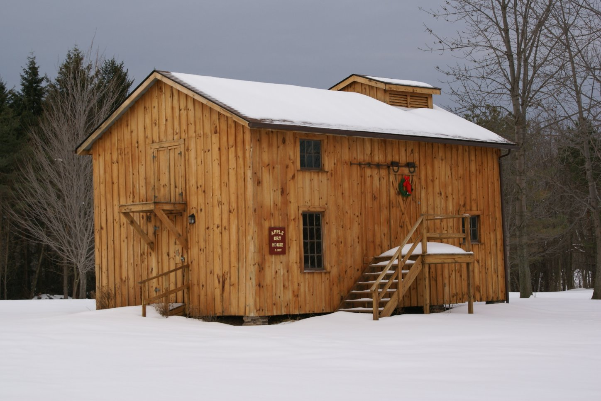

Apple Dry House

Heritage Square's apple dry house is a replica of an 1800s dry house.
The history of apple farming dates back to 1804 when white settlers first settled in Pultneyville and began propagating the apple tree found there. By 1850, commercial culture was at its beginning. Apples were stored in cellars or hand-peeled and sliced, then dried in the sun or on racks over kitchen stoves.
The drying of apples occurred after the apples were shaken from the trees. They were then taken to a dry house. Many of these dry houses still exist in Ontario, but they are no longer used for their original purpose. On display in the apple dry house are original Pease corers and slicers.
Working at a dry house, wages were typically 50 cents for a woman, 75 cents for a strong boy, and $1.00 for a man. The heat for the kilns came from hot air furnaces that were fired by hard coal at $5.00/ton.
Building Must-See: Original Pease Apple Slicers